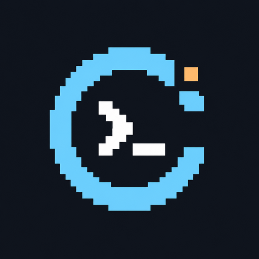

AstroWare Conception · Identité produit · 2026

CPCéleste
Vos idées prennent vie en BASIC.
L’atelier Locomotive BASIC pour Amstrad CPC.
Un atelier pour explorer, écrire et créer.
Le charme du CPC rencontre les outils d’aujourd’hui. Une orbite pixelisée, une invite de programmation et une étoile : trois signes pour l’exploration, le code et l’idée qui devient un programme.
La palette
Bleu nuit
#10151D
Cyan orbital
#74D4FF
Ambre stellaire
#FFBE76
Blanc de lecture
#E4EBF3
Gris bleu
#94A9BB
Des mots lisibles. Un symbole reconnaissable.
Mot-symbole en typographie système ; code en monospace. Le pixel donne le caractère, la lisibilité guide l’interface. Conserver les proportions du symbole et un espace libre d’au moins un quart de sa largeur.